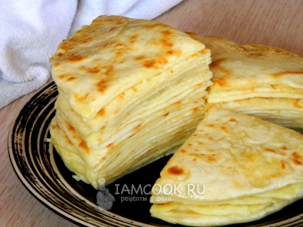

Хичины

Хычины с сыром и картофелем
Описание
Хычин - это лепешка из тонкого теста с картофельно-сырной или мясной начинкой с зеленью. Для теста подойдет любой
кисломолочный продукт: кислое молоко, кефир, айран, тан и т.д., чем жирнее, тем вкуснее тесто. Для начинки надо
взять равное количество картофеля и сыра. Я для пикантности добавила чеснок. Для хычинов с сыром и картофелем
берут брынзу или адыгейский сыр. Можно сделать с соленым творогом. Лепешки выпекаются на сухой сковороде и сразу
же обильно смазываются сливочным маслом, укладываются друг на друга. Вкуснее всего хычины с сыром и картофелем в
горячем виде, мягкие и нежные, они просто тают на губах.
- Мука пшеничная - 380 г
- Кефир - 300 мл
- Сода - 0,5 ч.л.
- Соль - щепотка
- Сыр адыгейский - 250 г
- Картофель отварной - 250 г
- Чеснок - 3 зубчика
- Масло сливочное - 100 г
Приготовление
- Из кефира, соли, соды и муки замесить мягкое, некрутое тесто. 5-7 минут "отбить" тесто об стол, дать
отдохнуть 20-30 минут.
- Сыр нарезать кусочками, чеснок натереть на мелкой терке.
- Добавить горячий отварной картофель.
- Размять толкушкой в однородное пюре.
- Тесто разделить на одинаковые кусочки, удобнее воспользоваться весами. Скатать шарики.
- Из начинки скатать такого же размера шарики, как тесто.
- Руками из теста сделать лепешку. Положить шар из пюре.
- Защипнуть хорошенько края сверху.
- Аккуратно руками расплющивать лепешку.
- Параллельно можно помогать скалкой. Не торопясь и очень нежно, чтобы тесто не порвалось. Если образовываются
пузыри, просто протыкать их зубочисткой.
- Тонкие лепешки выкладывать на разогретую сковороду.
- Обжарить с двух сторон до румяного состояния.
- Горячие хычины с сыром и картофелем промазывать растопленным сливочным маслом и складывать стопкой.
- Всю стопку лепешек нарезать на четыре части, и можно угощаться.